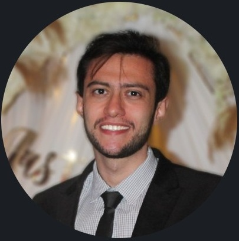
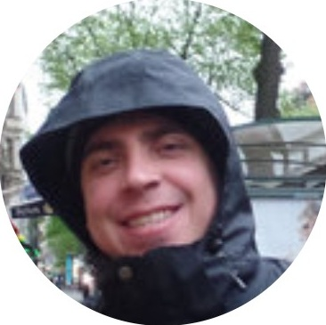
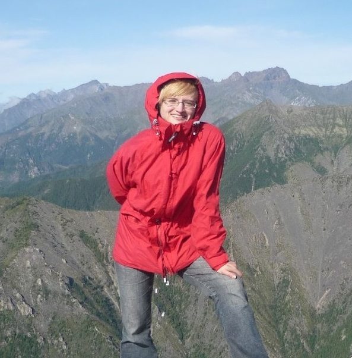
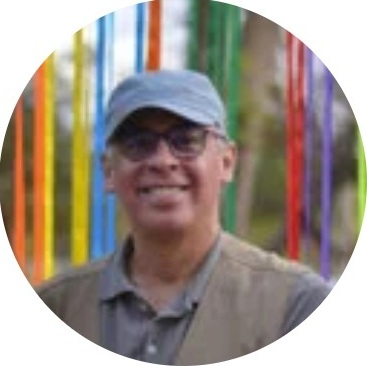
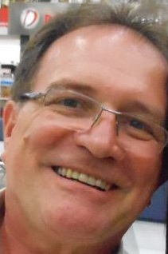
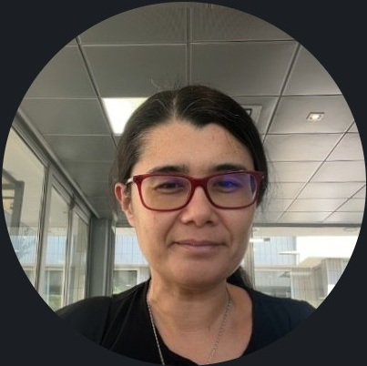
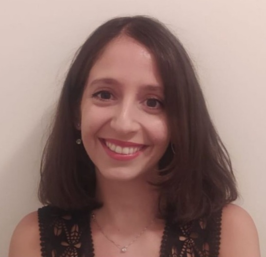
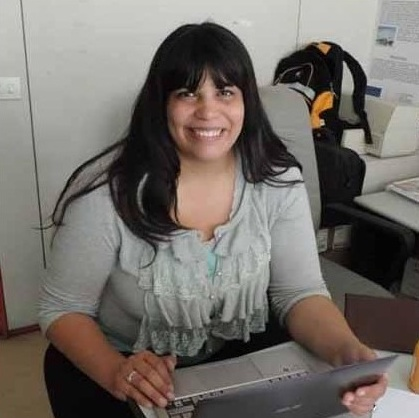

Leading voices and keynotes
MNS4A opens with an internationally recognized lineup — CNRS research directors, institute leaders, and the pioneers behind the very methods now used worldwide to detect earthquakes, tsunamis, and space weather from GNSS and ionospheric data. Their work sets the tone for three days of discussion on modeling, networks, and instrumentation in aeronomy and its links to natural hazards.








A space where science meets technology
MNS4A is an international forum for geophysicists and technologists to discuss the most pressing challenges at the intersection of atmospheric modeling, observational networks, and scientific instrumentation — bridging fundamental science with real-world applications.
The workshop facilitates discussion on advancing real-time data acquisition, modeling techniques, and measurement systems — including applications that address both societal challenges and technological demands from the perspective of aeronomy and the atmosphere-ionosphere system.
Natural hazards & the ionosphere-atmosphere system
The primary scientific focus is on presenting advances and challenges in modeling and measuring the variability of the atmosphere-ionosphere system, with special emphasis on natural hazards and space weather phenomena.
Session structure
The workshop is organized into three core thematic sessions.
Modeling of Atmosphere and Ionosphere Variabilities
This session welcomes contributions on modeling approaches for forecasting and hazard characterization, including emerging techniques such as machine learning and data-driven methods, data assimilation, and data–model integration. Topics also include strategies to reduce observational gaps through optimized instrument deployment and expanded monitoring networks, as well as multidisciplinary integration of atmospheric, ionospheric, seismic, and geodetic observations. Recent developments in distributed sensing technologies, GNSS monitoring, and multi-sensor approaches have opened new opportunities for understanding the impacts of natural hazards across different geophysical domains. Modeling plays a central role in aeronomy because it enables the quantitative investigation of physical mechanisms that cannot be isolated from observations alone, linking lithospheric and meteorological conditions, neutral dynamics, ionospheric electrodynamics, plasma transport, composition, and conductivity across the thermosphere–ionosphere system. Recent advances have improved the representation of key aeronomic phenomena such as Traveling Ionospheric Disturbances, Sq current systems, the equatorial electrojet, vertical E × B drifts, plasma density structures, sporadic E layers, and plasma irregularities, leading to a better understanding of their variability with local time, season, solar flux, geomagnetic activity, and longitude, as well as space weather impacts on technological systems. Continued progress, however, depends on stronger observational constraints and further development of physics-based, empirical, machine learning, and data-driven models, particularly through studies integrating ground-based and satellite observations, evaluating model performance, improving forecast capabilities, and investigating sensitivities to winds, electric fields, conductivities, lower atmospheric forcing, and geomagnetic disturbances
Scientific Networks for Atmosphere and Ionospheric Applications
We invite contributions related to open scientific questions in aeronomy, including applications of multi-instrument observational networks for studies of atmosphere-ionosphere coupling, space weather, and geospace variability. Advances in aeronomic research have been driven by integrated ground-based and space-based observational networks, enabling coordinated measurements across multiple spatial and temporal scales and improving our understanding of atmospheric and ionospheric processes. Ground-based instruments, including seismometers, Fabry-Perot interferometers, radars, ionosondes, GNSS receivers, magnetometers, All-sky imagers, and riometers, provide continuous high-resolution observations, while satellite missions offer global coverage and synoptic monitoring of large-scale phenomena. Despite significant progress, major scientific challenges remain due to gaps in the geographic distribution of observational infrastructure, and real-time data acquisition, limiting our understanding of spatial-temporal variability and atmosphere-ionosphere coupling. This session will address key open questions in aeronomy, emphasizing observational gaps and international efforts to expand and coordinate instrumentation networks.
Scientific Instrumentation and Challenges
This session welcomes contributions on instrument development, acquisition, operation, maintenance, dataflow coordination, low-cost alternatives, instrument intercomparison, nowcasting, data assimilation, novel observational strategies, advances in data acquisition and analysis, and coordinated observations. The advancement of scientific instruments is essential for observing atmospheric and space phenomena across different spatiotemporal scales and for understanding the coupling among the lithosphere, atmosphere, ionosphere, and space environment. Ground-based and space-borne instruments, including rockets and satellites, provide complementary observations that support studies of atmospheric and ionospheric variability and their impacts on technological infrastructure and socioeconomic activities. Ground-based instruments offer continuous, long-term, and high-temporal-resolution monitoring, although with limited spatial coverage. Space-borne instruments provide broader spatial coverage and a global perspective, generally with lower temporal resolution. Both passive and active techniques are widely used, but they may face limitations related to weather conditions, environmental interference, operational complexity, technical constraints, and financial costs.
Three-day schedule 19–21 October
The workshop spans three full days of invited talks, contributed presentations, and round-table discussions. Each day is dedicated to one of the three scientific sessions — Day 1: Modeling, Day 2: Networks, Day 3: Instrumentation — mirroring the sessions described above. Titles and first authors are listed below; click a title to read its abstract. Slots still marked TBD will be filled as the program is finalised.
- Jonas R. Souza
- Sophia R. Laranja
- Saúl A. Sánchez Juarez
- Laysa C. Araujo Resende
- Sony S. Chen
- Prosper K. Nyassor
- Ângela Machado dos Santos
- Rogério H. Honda
- Rodolfo de Jesus
- Vinícius Deggeroni
- Vânia F. Andrioli
- Oluwasegun M. Adebayo
Poster session
Each day includes a poster session, following the scientific theme of the day. Posters are numbered P01 to P24; titles and authors will be listed here as the program is finalised.
Local organizing committee
The Local Organizing Committee is responsible for the logistical and operational coordination of MNS4A, hosted at INPE — São José dos Campos.
Scientific organizing committee
The Scientific Organizing Committee (SOC) brings together researchers from Brazil and abroad working across aeronomy, ionospheric physics, and observational networks.
An inclusive scientific forum
MNS4A is designed to be a forum for researchers at all career stages. The organizing committee is committed to including early-career researchers in oral presentations, alongside invited senior scientists. The tone of the workshop is collaborative and open — this is not a workshop for the select few, but for anyone genuinely working to solve problems at the intersection of science, instrumentation, and societal need.
Early-career researchers are especially encouraged to participate and present their work. The scientific committee will actively seek to include emerging voices in oral sessions, recognizing that fresh perspectives are essential to the progress of the field.
Contributions are welcome in oral and poster format. The scientific committee will evaluate submissions and provide feedback on texts before final structuring of the program.
Researchers interested in attending MNS4A without submitting a contribution are warmly welcome.
⚠ MNS4A is unfortunately unable to provide financial support for workshop attendance expenses. If you have received written confirmation, please disregard this notice.
Getting to São José dos Campos View on Google Maps
The workshop takes place at INPE — National Institute for Space Research, located in São José dos Campos, SP, Brazil. The closest international gateway is Guarulhos International Airport (GRU), approximately 70 km away. Participants are responsible for arranging their own travel to the venue.
Accommodation near the venue
MNS4A is unfortunately unable to cover accommodation or transport expenses. If you have received written confirmation stating otherwise, please disregard this notice.
Back to topEntering Brazil
Participants are kindly advised to contact the Consulate or Embassy of Brazil in their country to make the necessary arrangements for obtaining any visa required to enter Brazil. Please also verify whether a transit visa applies to your itinerary.
Adequate health insurance is the personal responsibility of each workshop participant. Invitation letters for visa purposes are issued only upon request and exclusively to participants who have completed the registration process.
Request Your Invitation Letter
To request an official invitation letter for visa purposes, write to the organizing committee after completing your registration.
saul.juarez@inpe.brFind a Brazilian Embassy
Locate the nearest Brazilian consular post in your country and check the latest entry requirements for Brazilian visa applicants.
Future announcements and further information will be communicated to all registered participants by email.
Back to top